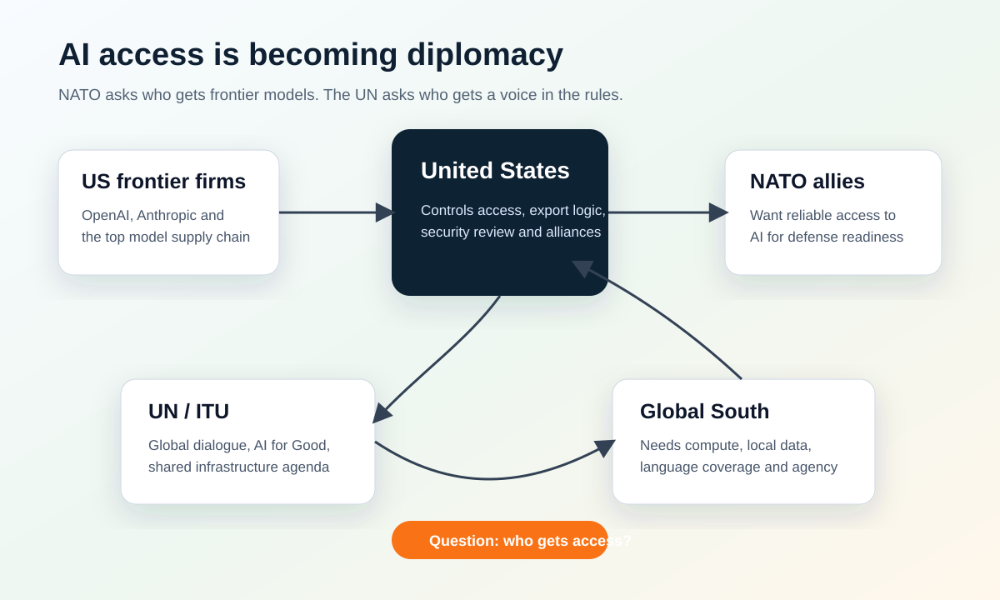

AI도 외교 자산이 됐다: NATO와 UN이 묻는 같은 질문
오늘 AI 뉴스의 핵심은 새 모델 성능이 아니다. 최첨단 AI를 누가 통제하고, 누가 접근할 수 있으며, 그 규칙을 누가 정하느냐가 외교와 안보의 테이블로 올라왔다는 점이다.

오늘의 묶음 뉴스
NATO는 접근권을, UN은 규칙을 묻고 있다
2026년 7월 7일부터 8일까지 열리는 앙카라 NATO 정상회의를 앞두고, 미국의 OpenAI와 Anthropic 같은 프런티어 AI 기업이 동맹 내부의 전략 변수로 다뤄지고 있다. 동시에 UN과 ITU는 AI for Good Global Commission과 글로벌 AI 거버넌스 대화를 통해, AI가 일부 국가와 기업에만 집중될 때 생기는 불평등과 통제 문제를 꺼내고 있다.
왜 이 두 뉴스를 함께 봐야 하나
NATO 뉴스만 보면 군사 동맹 내부의 기술 접근권 문제처럼 보인다. 유럽 입장에서는 미국이 보유한 최상위 AI 모델에 얼마나 안정적으로 접근할 수 있느냐가 방위력, 정보 분석, 사이버 대응 능력과 연결된다. AI가 단순한 업무 도구가 아니라 군사 준비 태세의 일부가 되면, 모델 API 접근권은 무기 체계 접근권과 비슷한 성격을 띠기 시작한다.
UN/ITU 뉴스는 무대가 다르다. 여기서는 미국과 유럽 동맹이 아니라, 세계 전체가 AI의 혜택과 위험을 어떻게 나눌 것인지가 쟁점이다. Axios 보도에 따르면 AI for Good Global Commission은 기술 기업 경영진과 각국 지도자를 한자리에 모으는 방식으로 출발한다. Guardian이 다룬 UN 패널 보고서는 AI가 공유 규칙 없이 빠르게 확산될수록 각국 정부와 시민의 통제력이 줄어들 수 있다고 경고했다.
두 뉴스의 공통 질문은 같다. “최첨단 AI는 누구의 것인가?” NATO는 동맹 안에서 이 질문을 던지고, UN은 세계 전체를 상대로 같은 질문을 던진다.
| 무대 | 표면 이슈 | 진짜 쟁점 |
|---|---|---|
| NATO | OpenAI·Anthropic 등 미국 AI 접근권 | 동맹국도 미국 프런티어 모델에 안정적으로 접근할 수 있는가 |
| UN / ITU | AI for Good Global Commission과 글로벌 거버넌스 대화 | AI 규칙을 선진국과 빅테크만 정하게 둘 것인가 |
| 글로벌 사우스 | AI 도입 격차, 언어 격차, 인프라 격차 | 접근은 늘어나도 실제 통제권은 오히려 줄어들 수 있음 |
블로그에서 잡아야 할 문장
이번 이슈를 “AI 규제 뉴스”라고만 쓰면 힘이 약해진다. 더 정확한 프레임은 “AI 접근권의 외교화”다. 과거에는 반도체, 통신망, 위성, 에너지가 국가 간 협상 카드였다면, 이제는 최상위 AI 모델과 이를 돌릴 수 있는 컴퓨트 인프라도 같은 자리에 올라왔다.
특히 미국이 프런티어 모델 기업을 사실상 보유한 국가처럼 행동할수록, 유럽은 자체 AI 기업과 방위 AI 스타트업을 키우려는 압박을 더 크게 받을 수 있다. UN이 말하는 불평등 문제도 여기와 연결된다. 모델을 쓸 수 있다는 것과 모델의 기준, 안전장치, 언어, 데이터, 배포 조건을 스스로 정할 수 있다는 것은 전혀 다른 문제다.
이미지와 저작권 메모
관련 기사에는 NATO 정상회의 사진, UN 로고가 있는 현장 사진, Axios의 일러스트가 붙어 있다. 그러나 이 이미지는 대부분 언론사 또는 Getty/Corbis 계열 저작권 이미지이므로 그대로 저장해 재게시하지 않는 편이 안전하다. 본문에는 직접 제작한 도표를 사용하고, 원문 기사 링크를 통해 독자가 이미지를 확인하도록 안내하는 방식이 적절하다.
이미지 참고 링크
출처와 확인 링크
발행 전 확인
NATO 정상회의는 7월 7~8일 예정이라, 실제 공동성명이나 기자회견에서 AI가 어느 정도 비중으로 다뤄지는지 발행 직전에 한 번 더 확인해야 한다. UN/ITU 쪽도 7월 8일 첫 회의 이후 새 명단이나 선언문이 나올 수 있다.